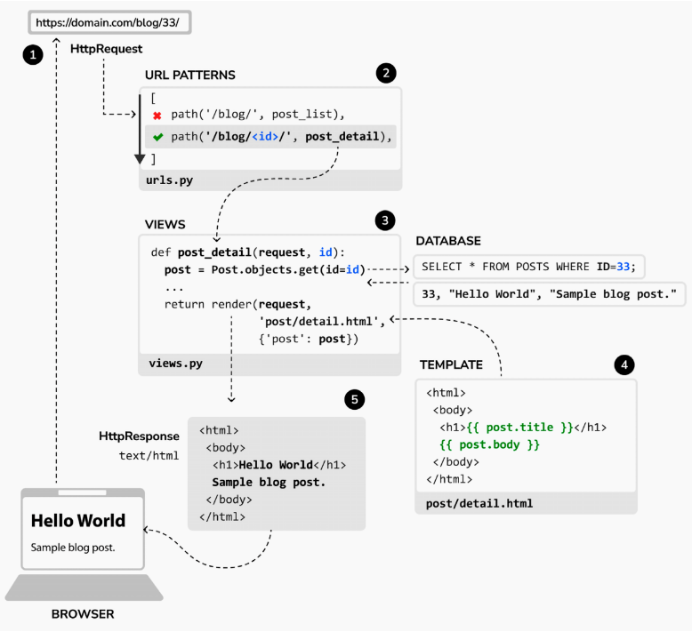
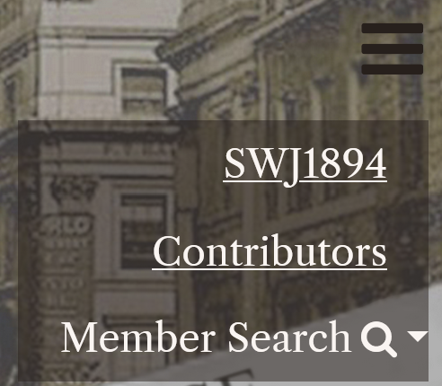
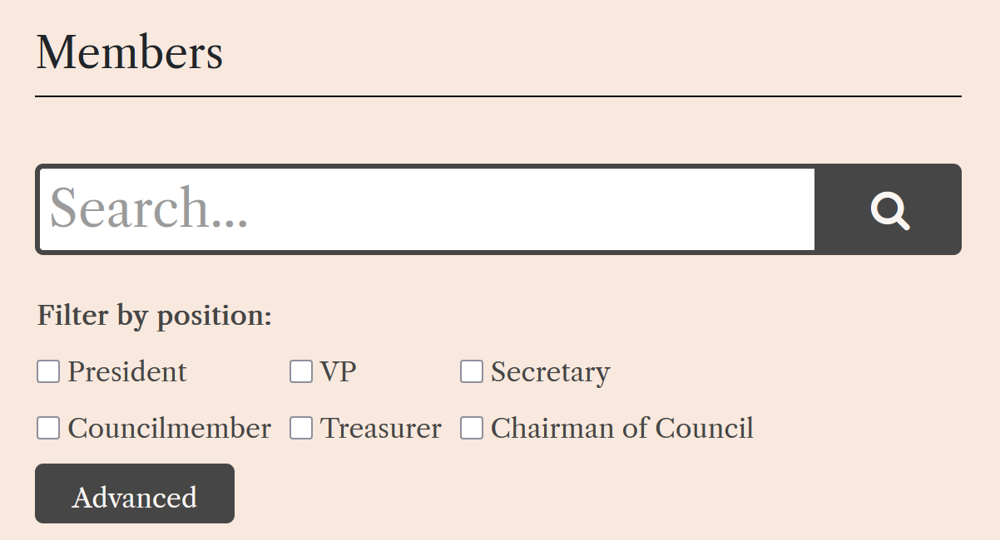
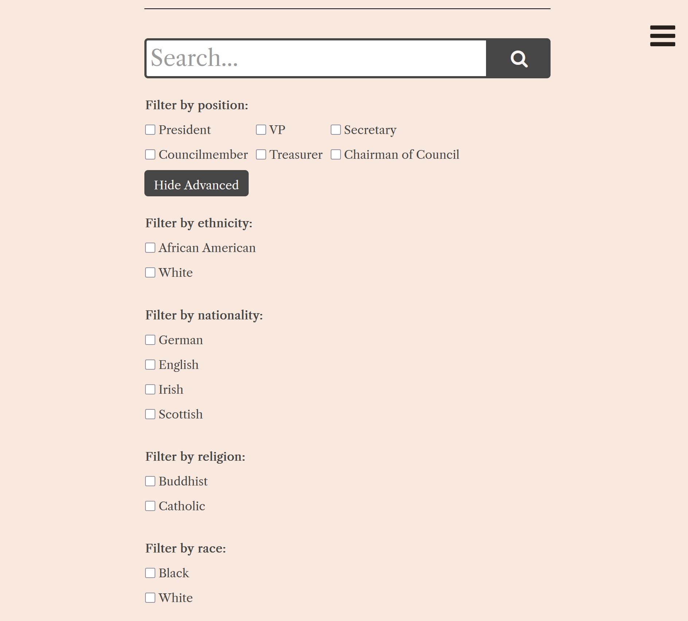

Month 1
January 20th – February 14th
During Month 1, we began our work on the project, focusing on understanding the existing Django structure and setting up our development environment.
Development Structure

Tasks Completed
- Documented findings and next steps for Month 2.
- Explored Django framework and its application within the project.
- Reviewed previous project structure and documentation.
- Set up local development environment.
Month 2
February 17th – March 14th
During Month 2, we began working on some fixes and new functions into the website.
Tasks Completed
- Added an advanced search function to the website.
- Documented findings and next steps for Month 3.
- Fixed date ranges for members.
- Fixed the navigation bar to only have a shadow effect to the related options.
Tasks In-Progress
- Import/export for database.
Development Screenshots
1. Navigation Bar Fixed

2. Added Advanced Search Function

